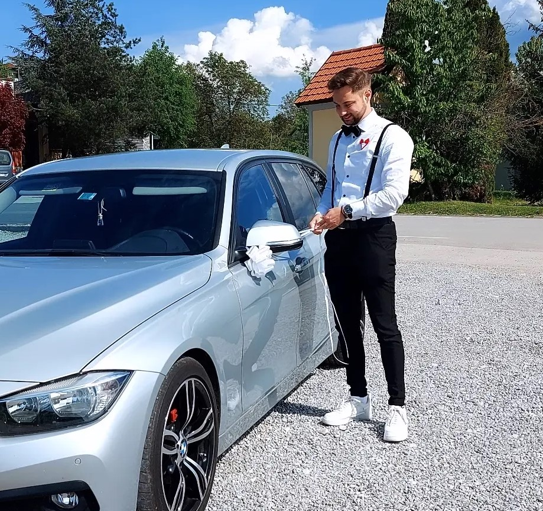

Mitja Brkopec, dipl. inž. el.
HTML DEVELOPER

+386 40 365 149 mitjabrkopec97@gmail.com My startup Mala Cikava 8a, 8000 Novo mesto, Slovenia
Summary:
I am an enthusiastic individual with several years of experience in
electrical engineering and robotics, full of energy and motivation. I value
myself the most for my teamwork skills, leadership of smaller projects,
knowledge of various programming languages (C++, C, LabVIEW, HTML),
and the ability to design and execute various electrical engineering
projects. I have acquired these skills through various jobs (both as
a student and in regular employment) and working for my own
company.
Education:
Graduate Electrical Engineer - Faculty of Electrical Engineering, University of Ljubljana, Ljubljana
Work experience:
- Mandatory internship, Revoz d.d., Novo mesto - February 2013 — March 2013
- Mandatory internship in the
second year of high school.
- Mandatory internship, KRKA, d. d., Novo mesto, Novo
mesto - February 2014 — March 2014
- Mandatory internship in the
second year of high school.
-
Quality control, Trigo storitve, storitve kakovosti,
d.o.o., Novo mesto - June 2014 — August 2014
-
As a quality control inspector
in manufacturing, my job
was to ensure that the
produced products or services
met satisfactory levels and
adhered to specifications and
standards. My job duties included
reviewing product samples,
testing functionality, and verifying
compliance with standards.
-
Worker, McDonald's, Novo mesto - April 2015 — July 2017
-
My main responsibilities
at McDonald's were food
preparation, fulfilling customer
orders, maintaining cleanliness
and organization of the restaurant,
responding to customer needs,
and collaborating with colleagues.
Additionally, I learned to work
under pressure while working at
McDonald's.
-
Working in manufacturing, KRKA, d. d., Novo mesto, Novo
mesto - September 2017 — August 2018
-
My responsibilities in
manufacturing included
operating and maintaining
production lines, inspecting
product quality, managing
raw materials and supplies,
and collaborating in process
improvement. Additionally, I
needed to have good technical
knowledge and the ability to work
in a team to ensure smooth
operation of production.
-
Development engineer, Hella Saturnus Slovenija d.o.o.,
Ljubljana - February 2020 — June 2020
-
My experience in the development
department involved working
with the LabVIEW program.
As a developer, I contributed
to the development of
an application that enables
automatic measurement and
control of various circuits, utilizing
my knowledge and experience.
Additionally, I played a role in
developing innovative solutions
for various automotive companies,
which provided me with an
opportunity to further enhance
my knowledge and skills.
-
Technologist, Hyb d.o.o., Novo mesto - June 2021 — September 2021
-
My main responsibilities
at HYB company were
process development, production
monitoring, and quality control of
the sensors they manufactured.
Additionally, I also briefly assisted
in the design of the sensors
themselves. As a technologist,
I worked on improving the
efficiency and effectiveness of
the production process while
maintaining quality standards.
This involved analyzing data,
identifying areas for improvement,
and implementing solutions to
optimize the production process.
-
Professor, Šolski center Novo mesto, Novo
mesto - September 2021
-
As a high school professor, I
have the honor and privilege
of shaping the future of future
electrical engineers. I teach them
not only theory but also practical
knowledge that they will need
in their profession. My curriculum
is rich and diverse, covering
subjects such as electrical circuit
design, programming using the
Arduino environment, basics
of electrical engineering, and
programming. All of this requires
constant learning and education,
which is why I have pursued
various certifications myself. I am
especially proud of the education
programs I have organized
for foreigners, as they have
allowed me to spread knowledge
and experiences about electrical
engineering even further.
-
Founder, Elektronika z robotiko, Whole Slovenia - September 2021
-
As two former students of
electrical engineering at the
Faculty of Electrical Engineering
at the University of Ljubljana,
we created a project called
"Electronics with Robotics". Our
goal was to show children
that electrical engineering is not
only complex but also fun and
interesting.
Recently, we have been seeking
to expand our project to a
wider audience, especially among
primary schools. We aim to
introduce children to electrical
engineering through interactive
instructions and video content, so
that they can learn how useful and
relevant electrical engineering is in
today's world.
Skills:
- HTML - 50%
- Arduino - 80%
- C language - 40%
- LabVIEW - 60%
- KiCad and Altium Designer - 60%
- LTspice - 30%
Certificates:
Arduino learning platform - Creating programmable devices
Internet safety
Programming in the Arduino environment
Programming
Solar power plants
Use of distance education tools
Website data management
Welcome to my Tech World.html